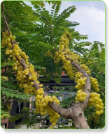

Kalico Supermarket
Get Your Food From Us
Our Vision
To be the leader in sustainable grocery shopping, offering fresh, local products while promoting healthy lifestyles and environmental responsibility.
Goal
Provide fresh, locally-sourced products, promote sustainability, support local farmers, and be the top choice for health-conscious shoppers.

Kalico Supermarket Community Statement
At Kalico Supermarket, we believe in nourishing more than just bodies – we're committed to nurturing the very heart of our community. As your local grocery partner, we strive to be a pillar of support, sustainability, and connection in our neighborhood.
Our Commitment to You
We Provide:
- Quality and Affordability
- Local First
- Community Engagement
- Sustainability
- Inclusivity
- Education
- Employment Opportunities
- Customer-Centric Approach

Tips for Encouraging Healthy Choices in a Supermarket
- Shop the Perimeter
- Read Labels Carefully
- Focus on Whole Foods
- Prioritize Fresh Produce
- Choose Lean Proteins
- Opt for Whole Grains
- Avoid Processed Foods
- Select Healthy Snacks
- Limit Sugary Beverages
- Choose Low-Fat or Fat-Free Dairy


Contact
Location: Goyave, St. John
Contact Number: 419-7893